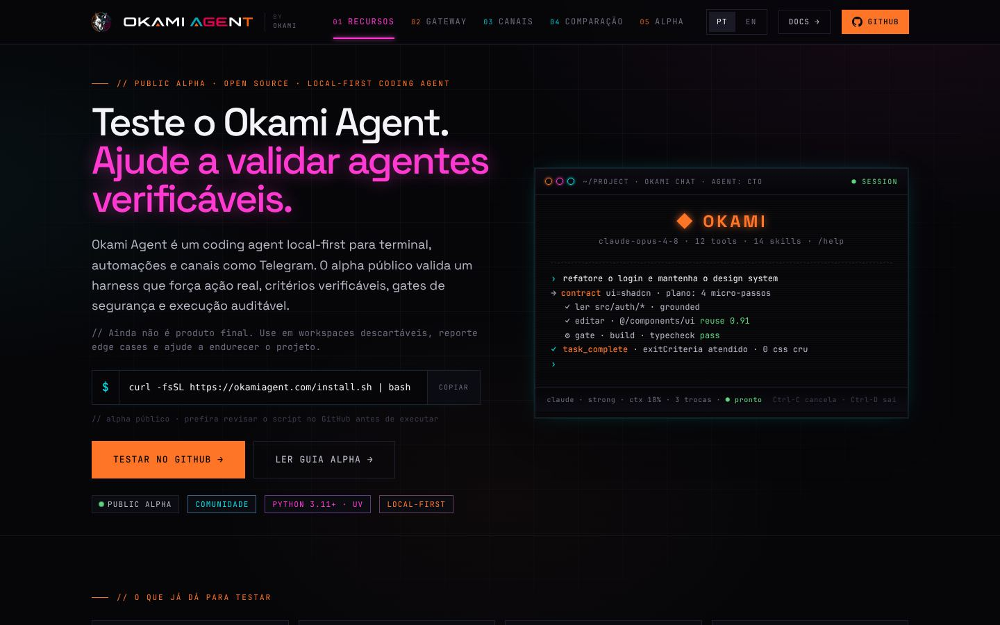

O agente de código que faz o que diz.
Agente de código soberano com paridade de capacidades entre LLMs, auto-aperfeiçoamento (skills, persona, memória) e aderência obrigatória a design systems. No terminal, no Telegram, onde você quiser, sem prender sua empresa a um único fornecedor de modelo.

- Licença
- MIT
- Linguagem
- Python 3.11+ · uv
- Versão
- v0.15-beta · public beta
- Testes
- 4.081 passando
As duas dores que originaram o Okami Agent.
O agente diz “vou fazer” e não faz; quando cobrado, responde “só um momento” e trava. Você perde a tarde revisando se o trabalho aconteceu de verdade em vez de revisar o código.
Cada provedor tem seu formato, seu harness e sua conta. Trocar de modelo significa refazer integração, e pagar duas vezes quando um agente pago dirige outro agente pago.
$ okami "refatore o módulo de auth seguindo o design system" ▸ skills carregadas: refactor · design-system · tests ▸ modelo: claude-opus-4.8 → fallback gpt-5.6-luna ▸ persona: engenheiro sênior · memória: 3 decisões relevantes ◆ 12 arquivos alterados · tokens do DS respeitados ✓ 4.081 testes passando · diff pronto para revisão $ ▍
O que o Okami Agent faz.
Mesmo comportamento em qualquer LLM
Runtime targets imutáveis, um resolver e um registro de transporte. LiteLLM continua disponível como adaptador, não como a arquitetura. Trocar de modelo não muda o que o agente consegue fazer.
Tool streaming com histórico atômico
Deltas estruturados de tool-call, retomada segura após crash e compactação que nunca separa uma chamada do seu resultado.
Cancelamento com escopo de requisição
Deadlines de total, TTFB e idle, abort cooperativo e retry interrompível. Depois de um cancelamento terminal, nada continua rodando às suas costas.
30+ skills nativas e auto-aperfeiçoamento
O agente evolui com skills, persona e memória próprias, e mantém aderência obrigatória ao design system do projeto.
Controle de modelo direto do chat
Seletor inline de modelo, comando /providers, seleção persistente por sessão, heartbeat ao vivo e mídia entregue no próprio chat.
Rodapé de custo por resposta
Cada turno mostra contexto, tokens e tempo. Você sabe quanto custou aquela resposta, sem descobrir no fim do mês.
Ficha técnica e quando usar.
- Licença
- MIT
- Linguagem
- Python 3.11+ (uv)
- Versão
- v0.15-beta (public beta)
- Testes
- 4.081 passando
- Compatibilidade
- LiteLLM (adaptador)
- Interfaces
- TUI · Telegram
- Autenticação
- OAuth (6 provedores) · CLI · local
Você já paga Claude, Codex e outros. O Okami Agent usa a assinatura que você já tem, com paridade de comportamento, em vez de exigir uma segunda conta de API.
A aderência ao design system é obrigatória, não sugestão. O agente para de reinventar componentes e reusa o que já existe no seu repositório.
Disparar e acompanhar tarefas pelo Telegram, com seletor de modelo e heartbeat, quando a demanda chega longe do terminal.
Perguntas sobre o Okami Agent.
Preciso pagar uma API além da minha assinatura?
Não. O Okami Agent trabalha com autenticação por assinatura (Codex/Claude via OAuth ou CLI, LMStudio local, MiniMax/MiMo via Token Plan), com fallback automático. Usar API própria é opção, não requisito.
Está pronto para produção?
Está em beta público (v0.15-beta) com 4.081 testes passando. A superfície de comandos e configuração ainda pode mudar antes do GA. Antes de expor publicamente, rode okami policy check --strict.
Como ele se compara a rodar o CLI do provedor direto?
O CLI do provedor te dá aquele provedor. O Okami Agent te dá comportamento consistente entre provedores, com histórico atômico, cancelamento com deadline e skills próprias.